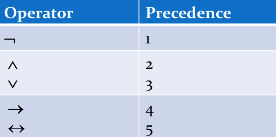
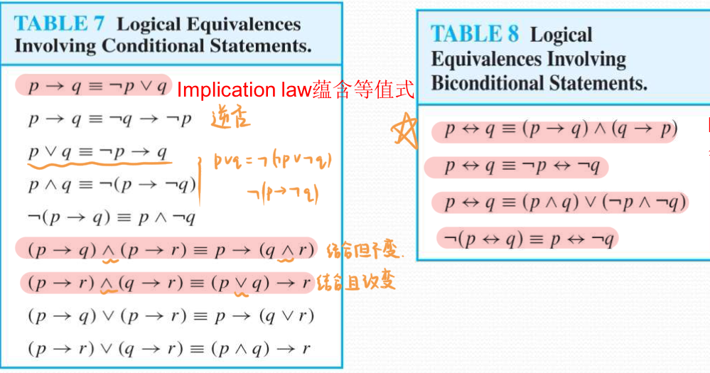
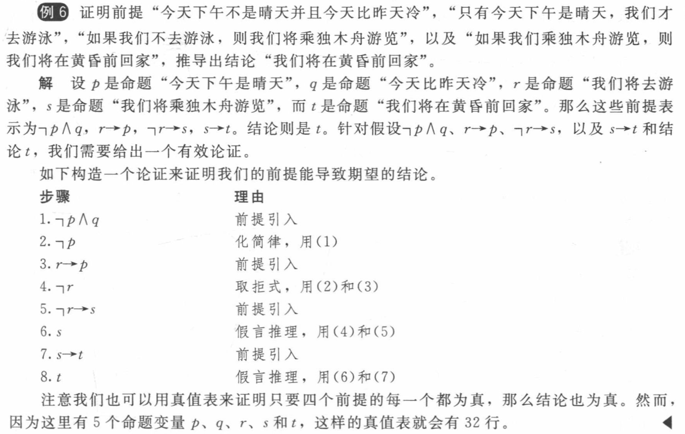
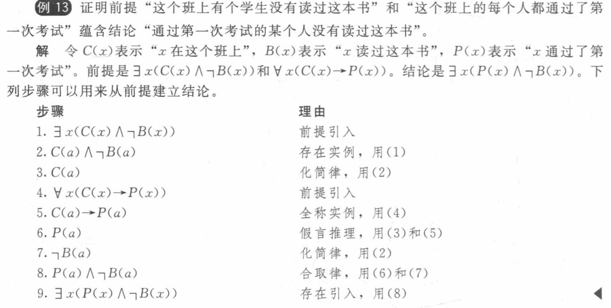

English¶
| English | Chinese | English | Chinese | English | Chinese |
|---|---|---|---|---|---|
| theorem | 定理 | axiom | 公理 | lemma | 引理 |
| colollary | 推论 | conjecture | 猜想 |
知识框架¶
1.1 Propositional Logic¶
1.1.1 命题和命题逻辑¶
- 否定：Negation ¬ （NOT）
- 合取：Conjunction ∧ （AND）
- 析取：Disjunction/Inclusive or（兼或） ∨ （OR）
- 异或：Exclusive or ⊕ （XOR）
-
蕴含：Implication -> （IF-THEN）
不同的English表达
- if p,then q
- p implies q
- if p,q
- p only if q
- q unless ¬p
- q when p
- q if p
- q whenever p
- p is sufficient for q （充分的）
- q follows from p
- q is necessary for p （必要的）
- 只有p为T，q为F时，p->q为F；其余情况为T
-
推广的条件陈述：
- 逆（converse）：q->p
- 逆否（contrapositive）：¬q->¬p
- 反（inverse）：¬p->¬q
- 逆否=原命题，逆=反命题
-
双向蕴含：Biconditional <-> （IF AND ONLY IF）
-
表达：
- p if and only if q
- p is necessary and sufficient for q
- if p then q, and conversely
- p iff q
-
p与q不同时，p<->q为F；相同时，为T
-
其余操作符
- 或非：Peirce arrow ↓（NOR）
- 与非：Sheffer stroke ｜（NAND）
- ¬p=p|p
1.1.2 真值表¶
-
运算顺序

1.2 Applications¶
- 翻译English为逻辑命题
1.3 Propositional Equivalences（命题等价式）¶
-
命题的分类
- 永真式（tautology）：永远为T
- 矛盾式（contradiction）：永远为F
- 可能式（contingency）：T和F都有可能
-
逻辑等价 p⇔q or p≡q
- 定义：p和q的真值相同
常见等价关系
- Morgen's Laws（摩根定律）
- ¬(p∧q)≡¬p∨¬q
- ¬(p∨q)≡¬p∧¬q
- Identity Laws（恒等律）
- p∧T≡p
- p∨F≡p
- Domination Laws（支配律）
- p∨T≡T
- p∧F≡F
- Idempotent laws（幂等律）
- p∨p≡p
- p∧p≡p
- Double Negation Law（双重否定律）:¬(¬p)≡p
- Negation Laws（否定律）
- p∨¬p≡T
- p∧¬p≡F
- Commutative Laws（交换律）
- p∨q≡q∨p
- p∧q≡q∧p
- Associative Laws（结合律）
- (p∧q)∧r≡p∧(q∧r)
- (p∨q)∨r≡p∨(q∨r)
- Distributive Laws（分配律）
- (p∨(q∧r))≡(p∨q)∧(p∨r)
- (p∧(q∨r))≡(p∧q)∨(p∧r)
- Absorption Laws（吸收律）
- p∨(p∧q)≡p
- p∧(p∨q)≡p
- More

-
对偶式（Dual）
- 符号：\(S^*\)
- 规则：交换∧和∨，交换T和F
- 定理：S≡T if and only if \(S^*≡T^*\)
-
Functionally complete operators：{¬,∨} ,{¬,∧} ,{|} ,{↓}
-
可满足性（Propositional Satisfiability）：有真值为T
-
命题范式（Propositional Normal Forms）
-
分类：
-
the disjunctive normal form(DNF) （析取范式）
- e.g. (p∧q)∨(p∧¬q)
Notice!
¬(p∧q)∨r不满足析取范式，前半部分不是文字的合取形式！
-
the conjunctive normal form(CNF) （合取范式）
Notice!
只有文字和只有子句的命题既是合取范式，又是析取范式！
e.g. p，p∧¬q
-
-
相关定义：
- literal（文字）：一个变量或者其否定
- clauses（子句）：只由文字构成
- Conjunctive clause/basic product
- Disjunctive clause/basic addition
- Full disjunctive form（完全析取）：由最小项的析取构成
-
根据真值表得到范式
- 最小项（minterm）：文字的合取，得到析取范式，找真值表中的T
- 最大项（maxterm）：文字的析取，得到合取范式，找真值表中的F
-
1.4 Predicates and Quantifier（谓词和量词）¶
- 量词
- 全称量词：
- For all/every/each/any/arbitrary \(x\) , \(P(x)\)
- All of \(x\) , \(P(x)\)
- Given any \(x\) , \(P(x)\)
- 存在量词：
- For some \(x\) , \(P(x)\)
- There is an \(x\) such that \(P(x)\)
- There is at least one \(x\) such that \(P(x)\)
- 唯一性量词：
- There is a unique \(x\) such that \(P(x)\)
- There is one and only one \(x\) such that \(P(x)\)
- 全称量词：
常见公式
(1) \(\forall xP(x) \lor A\) ≡ \(\forall x(P(x) \lor A)\)
(2) \(\forall xP(x) \land A\) ≡ \(\forall x(P(x) \land A)\)
(3) \(\exists xP(x) \lor A\) ≡ \(\exists x(P(x) \lor A)\)
(4) \(\exists xP(x) \land A\) ≡ \(\exists x(P(x) \land A)\)
(5) \(\forall x(A \rightarrow P(x))\) ≡ \(A \rightarrow \forall xP(x)\)
(6) \(\exists x(A \rightarrow P(x))\) ≡ \(A \rightarrow \exists xP(x)\)
(7) \(\forall x(P(x) \rightarrow A)\) ≡ \(\exists xP(x) \rightarrow A\)
(8) \(\exists x(P(x) \rightarrow A)\) ≡ \(\forall xP(x) \rightarrow A\)
1.5 Nested Quantifiers（嵌套量词）¶
1.6 Rules of Inference（推理规则）¶
命题的推理规则
| 推理规则 | 永真式 | 名称 |
|---|---|---|
| \(\dfrac{p \quad p \to q}{q}\) | \((p \land (p \to q)) \to q\) | 假言推理 |
| \(\dfrac{\neg q \quad p \to q}{\neg p}\) | \((\neg q \land (p \to q)) \to \neg p\) | 取拒式 |
| \(\dfrac{p \to q \quad q \to r}{p \to r}\) | \(((p \to q) \land (q \to r)) \to (p \to r)\) | 假言三段论 |
| \(\dfrac{p \lor q \quad \neg p}{q}\) | \(((p \lor q) \land \neg p) \to q\) | 析取三段论 |
| \(\dfrac{p}{p \lor q}\) | \(p \to (p \lor q)\) | 附加律 |
| \(\dfrac{p \land q}{p}\) | \((p \land q) \to p\) | 化简律 |
| \(\dfrac{p \quad q}{p \land q}\) | \((p \land q) \to (p \land q)\) | 合取律 |
| \(\dfrac{p \lor q \quad \neg p \lor r}{q \lor r}\) | \(((p \lor q) \land (\neg p \lor r)) \to (q \lor r)\) | 消解律 |
e.g.

量化命题的推理规则
| 推理规则 | 名称 |
|---|---|
| \(\dfrac{\forall x\, P(x)}{P(c)}\) (任意 \(c\)) |
全称实例 |
| \(\dfrac{P(c)}{\forall x\, P(x)}\) (\(c\) 是任意元素) |
全称引入 |
| \(\dfrac{\exists x\, P(x)}{P(c)}\) (对某个特定 \(c\)) |
存在实例 |
| \(\dfrac{P(c)}{\exists x\, P(x)}\) (对某个元素 \(c\)) |
存在引入 |
e.g.
